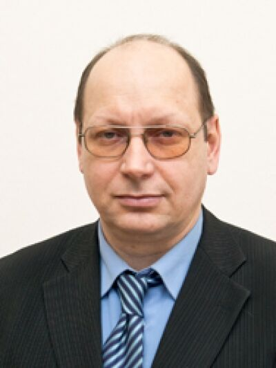
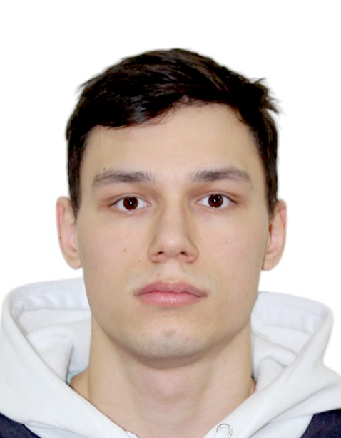

Студенческий проект по исследованию замкнутого ядерного цикла
Мы - группа из трех студентов, объединенных интересом к современной атомной энергетике и новым технологиям. В рамках учебного проекта мы изучаем принципы работы замкнутого ядерного цикла и представляем наш взгляд на будущее энергетики.

Координация научной части проекта, формулировка задач, проверка результатов и помощь в подготовке публикаций.

Создание образовательного сайта для проекта "Прорыв", включая разработку структуры страниц, интеграцию контента.
Создание 3D моделей ядерных реакторов и процессов замкнутого цикла, визуализация физических явлений.
Сбор информации из научных источников и публикаций, анализ данных по технологиям замкнутого ядерного цикла.